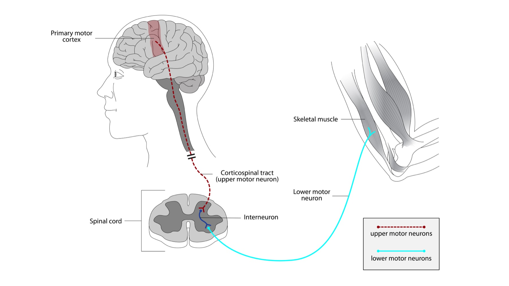

Antes de qualquer atualização em fraqueza, o filtro é síndrome topográfica: em qual andar da via motora mora o caso? E o Guillain-Barré continua no radar mesmo quando o foco parece músculo, SNC ou placa.
1Os 4 andares da via motora: 1º N · 2º N · placa · músculo.
2Onde moram DM/EM/GBS/ELA/placa/MG/LEMS — em que andar cada doença se encaixa.
3Por que GBS nunca sai do radar em prova de fraqueza.
Chips topográficos + 4 andares da via motora (clique nos andares e no radar GBS para explorar o padrão clínico de cada andar).
Esquema interativo dos quatro andares da via motora · teclado e clique.
Por que abrir pelo mapa?
Antes de Jo-1, surto de EM, DMD/kappa ou LEMS, localize o andar. Placa e músculo não são “periférico genérico”: são andares próprios, com doenças próprias. Sem o mapa, a lista de atualizações fica solta.

Via motora em continuidade — córtex motor primário → trato corticoespinhal (1º N / UMN) → medula → neurônio motor inferior (2º N / LMN) → músculo esquelético. A placa mora no ponto LMN–músculo.
PaulWicks · Wikimedia Commons · CC BY-SA 4.0 · Commons
Como ler a prancha
Córtex motor → trato corticoespinhal (1º N) → corno anterior (2º N) → músculo. A placa mora no ponto LMN–músculo. Quatro âncoras; o eixo “placa” mora no ponto LMN–músculo, mesmo quando o desenho atlas não nomeia a junção.
Os quatro andares
A fraqueza muscular se organiza por síndrome topográfica, não por “nome de doença na primeira pergunta”. Os andares são: 1º neurônio motor (trato/córtex — padrão de SNC), 2º neurônio motor (corno anterior, raiz, nervo), placa motora (junção neuromuscular) e músculo. Sem esse mapa, a lista de atualizações fica solta.
O que cada andar já carrega
No andar do músculo entra a dermatomiosite (e o parentesco com antissintetase). No 1º N / SNC, a esclerose múltipla. No 2º N / nervo, o Guillain-Barré. A esclerose lateral amiotrófica cruza 1º e 2º. Na placa, a doença da placa e a miastenia gravis — e o LEMS que se aprofunda adiante. Cada atualização aprofunda um desses eixos; o mapa de andares continua sendo o filtro inicial.
Radar de prova
Quando a questão é fraqueza, Guillain-Barré é grande pedido de prova — manter no diferencial mesmo quando o foco do dia for músculo, EM ou placa. O GBS “some” da mente quando a vinheta parece miopatia ou miastenia; a banca conta com isso.
O que estas atualizações acrescentam
Em músculo: Jo-1 → pulmão. Em EM: PCDT, dose de surto, atividade e kappa. Em placa: LEMS com facilitação, CaPC, pupila e incremental. O mapa de andares não muda; o que muda é o nível de precisão em cada andar.
Quiz
Q1. Em abordagem de fraqueza muscular, a organização inicial correta é:
Gabarito: B. A organização correta é por andares da via motora; placa e músculo são andares próprios, não “periférico genérico”.
(A) pula localização e cai em lista de nomes. (C) inverte: localiza primeiro, depois escolhe exame. (D) colapsa placa e músculo no “periférico” e apaga diferenciais de prova (MG/LEMS/miopatia).
Por que cair na A/D: reflexo de “qual a doença mais comum” ou dicotomia central/periférica de plantão, insuficiente na fraqueza neuromuscular.
Quiz
Q2. Em questão de fraqueza, qual entidade deve permanecer no radar diferencial mesmo quando o foco parece miopatia ou placa?
Gabarito: C. GBS é grande pedido de prova em fraqueza — some da mente quando a vinheta “não parece nervo”.
(A)(B)(D) são eixos reais deste recorte, mas a regra de ouro de radar em fraqueza é GBS.
Por que cair na A: confunde “SNC no diferencial” com o pedido clássico de fraqueza aguda flácida.